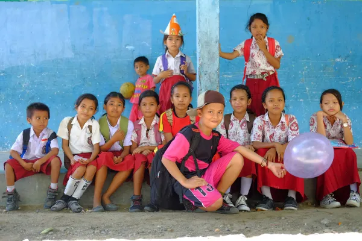
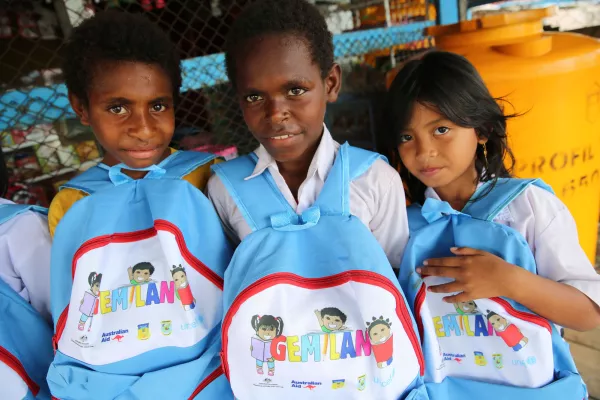
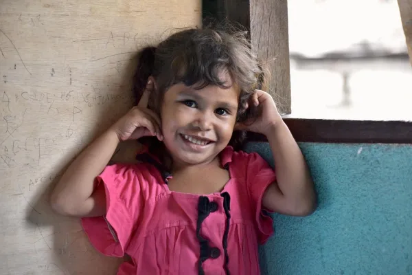
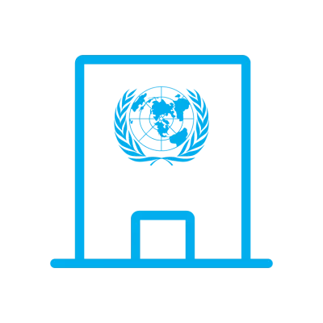
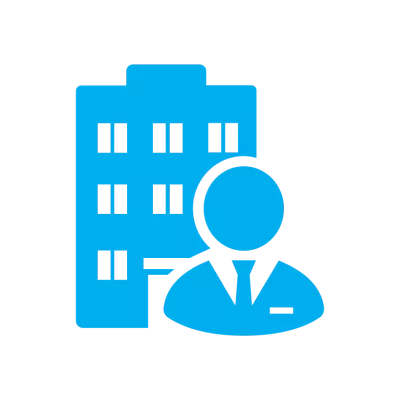
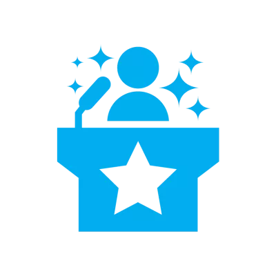
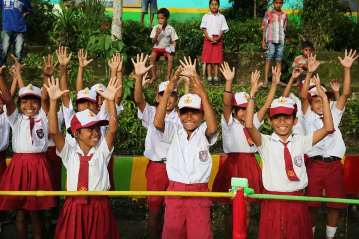

Tentang Kami
Selama lebih dari 60 tahun, UNICEF dan mitranya telah menjangkau jutaan anak di Indonesia dengan bantuan pembangunan dan kemanusiaan.

Perjalanan UNICEF
UNICEF dibentuk sebagai organisasi PBB untuk membantu anak-anak korban perang.
UNICEF mulai bekerja di Indonesia dengan bantuan darurat untuk mencegah kelaparan di Pulau Lombok.
Mandat UNICEF meluas untuk memenuhi kebutuhan anak-anak di negara-negara berkembang.
Tempat dimana UNICEF bekerja
Sejalan dengan pendekatan kesetaraan UNICEF, program ini mengakui upaya Indonesia untuk berkembang dari pinggiran, sambil mempertahankan pekerjaan di daerah padat penduduk seperti Jawa dan Sumatra tempat sebagian besar anak Indonesia tinggal.
Lihat bidang kerja
Anak-anak di Indonesia
Situasi anak-anak di Indonesia telah membaik, tetapi kesenjangan masih ada. Sekitar 80 juta anak paling rentan menjadi fokus perencanaan, pendanaan, dan layanan UNICEF.
Baca cerita anak
Bermitra bersama kami
UNICEF bekerja sama dengan beragam organisasi masyarakat sipil untuk menjangkau komunitas dan pengambil keputusan. Sebagai bagian dari Perserikatan Bangsa-Bangsa, UNICEF juga bekerja sama dengan program dan organisasi PBB lainnya untuk mendukung setiap negara mencapai Tujuan Pembangunan Berkelanjutan (SDG).

Perserikatan Bangsa-Bangsa
Sektor swasta
Tokoh publik
Pertanyaan umum
Jawaban atas pertanyaan yang paling sering diajukan tentang UNICEF.
Menampilkan 0 pertanyaan
Organisasi PBB yang dibentuk pada 1946 untuk membantu anak-anak korban perang. Di Indonesia, UNICEF mulai bekerja pada 1948 dengan bantuan darurat di Lombok.
Bidang kesehatan dan kelangsungan hidup anak, pendidikan, perlindungan anak, gizi, air dan sanitasi, serta kebijakan sosial. Kerja sama dengan pemerintah memiliki tujuh target, misalnya menurunkan stunting balita sebesar 14% dan angka kemiskinan anak dari 11,8% menjadi 9%.
Program UNICEF mengikuti rencana kerja yang disepakati dengan pemerintah. UNICEF tidak memberikan dukungan atas permintaan individu, jadi calon mitra dianjurkan menghubungi ahli teknis yang sesuai bidangnya.
Tidak.
Melalui kebijakan pengungkapan informasi, keikutsertaan dalam IATI, dan Portal Transparansi yang memuat data program.
Donasi hanya diterima lewat saluran resmi. Email resmi berakhiran @unicef.org atau @unicef.id. Permintaan atau akun yang mencurigakan dapat dilaporkan lewat alamat yang disediakan di situs resmi.
Bisa rutin sebagai Pendekar Anak atau sekali waktu lewat situs, kunjungan langsung, atau tim telemarketing. Panduannya ada di situs donasi resmi.
Berdasarkan data 2019, sekitar Rp72.000 dari setiap Rp100.000 masuk ke program, sekitar Rp5.000 untuk operasional, dan Rp23.000 untuk penggalangan dana.
Sistem pembayaran tersertifikasi PCI DSS dan koneksi memakai https.
Saat ini UNICEF hanya menerima dana.
Lowongan tersedia di UNICEF Current Vacancies dan LinkedIn UNICEF Indonesia.
Program bagi profesional muda yang ditempatkan di bidang program UNICEF, di kantor pusat, nasional, atau regional.
Magang tersedia untuk pelajar. UNICEF tidak merekrut sukarelawan secara langsung, tetapi peluangnya bisa dicari lewat UNV.
Remaja dapat berbagi ide lewat U-Report atau menggalang dana di kitabisa.com.
Penggunaan nama dan logo UNICEF tanpa izin dilarang. Untuk penggunaan logo, diskusikan dengan Tim Kemitraan UNICEF.
Perlu membuat janji lewat email sebelumnya.